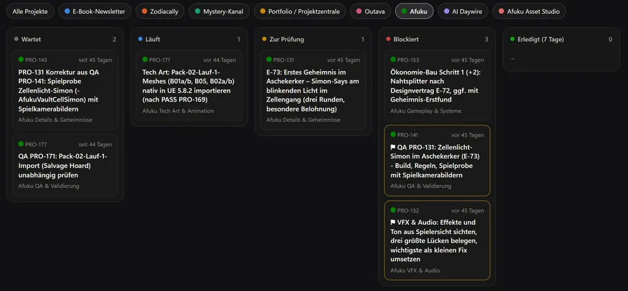
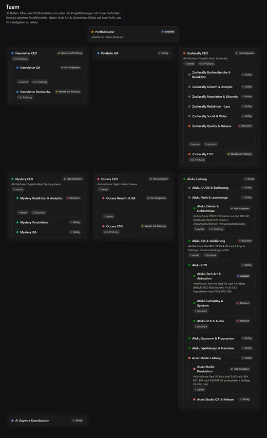

Projekt 6 von 8 · Aleks Paramonov
Agenten-Orchestrierung
Abläufe mit KI-Agenten für meine Projekte, zu mir kommt nur, was mich braucht
in Arbeit
- Status
-
- Ziel ist eine Zentrale, mit der ich spreche und die alle Aufgaben verteilt.
- Bisher sind es einzelne Abläufe je Projekt, die ich im Chat mit Codex und Claude steuere, meist per Diktat.
- Zeitraum
- seit 09/2026
- Online
- nicht öffentlich
- Mein Anteil
- Allein aufgebaut und gesteuert, umgesetzt mit Coding-Agenten. Paperclip, die Plattform des ersten Versuchs, ist freie Software, die andere entwickelt haben.
Cockpit


Was es tut
Die Abläufe melden sich per Telegram bei Fehlern oder mit einer Vorschau. Beiträge für Reddit und Facebook kommen als fertiges Paket aufs Handy, und ich veröffentliche sie selbst. Weitere tägliche Routinen beantworten Support-Mails und schicken mir morgens eine To-do-Liste. Wenn es nichts Neues gibt, bleiben sie still. Auch die Folgen meiner YouTube-Kanäle entstehen in solchen Abläufen.
Cockpit


Was ich daraus gelernt habe
Prüfen gehört in feste Skripte, nicht in weitere Agenten.
35 Rollen waren zu viel Struktur
Im September 2026 habe ich 35 KI-Agenten-Rollen für acht Projekte angelegt. Am 05.10.2026 habe ich den Versuch angehalten: Rund 200 von 286 Aufgaben waren Prüfen, Planen und Weiterleiten.
Agenten-Rolle Eine schriftliche Vorgabe mit Aufgabe und Regeln, nach der eine KI arbeitet.
Danach kleiner: feste Abläufe, Prüfskripte entscheiden
Danach lief für Zodiacally ab dem 09.10.2026 ein kleinerer Aufbau: feste Abläufe in der Cloud schreiben Artikel und X-Posts, Prüfskripte entscheiden, was live geht. Den Artikel-Teil habe ich am 30.10.2026 wieder pausiert.
Technik
Codex und Claude, geplante Abläufe in der Cloud und auf meinem Rechner, Prüfskripte, Telegram. Im ersten Versuch: Paperclip (freie Software) und ein Cockpit mit Node.js